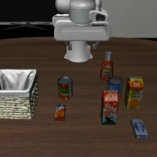
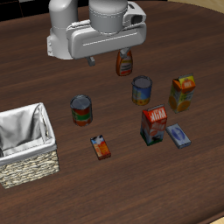
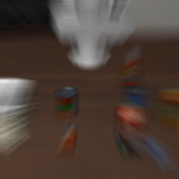
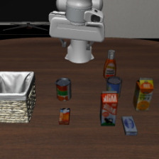
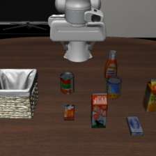
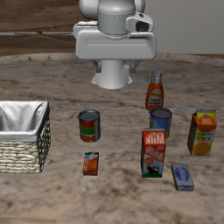
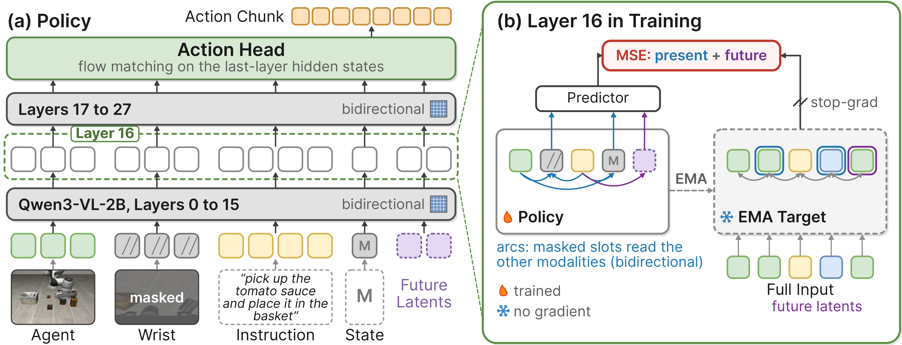
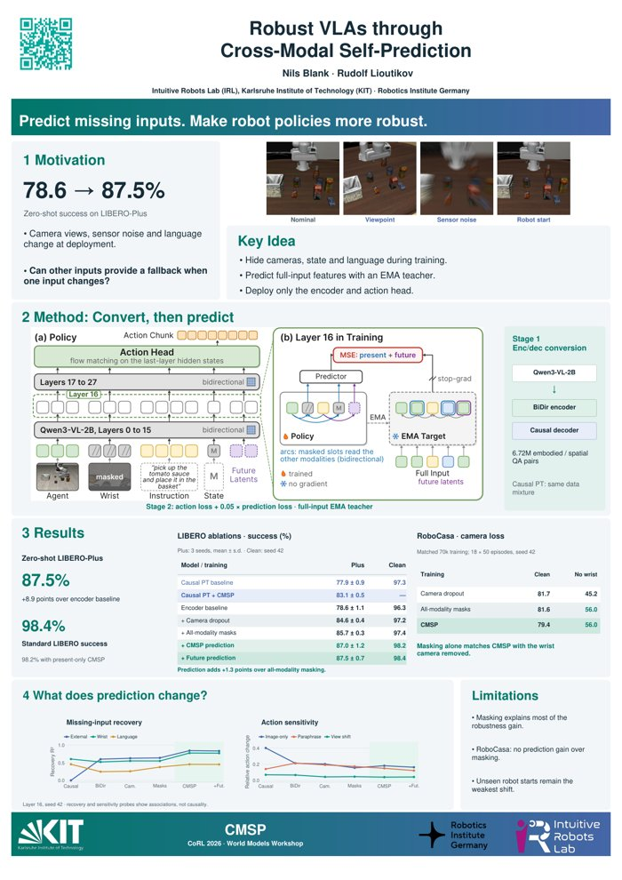

TL;DR During training, we hide each input of a vision-language-action policy (cameras, robot state, instruction) and make the policy predict the hidden input's latents from the remaining ones. A 2B VLA trained only on LIBERO reaches 87.5% zero-shot on LIBERO-Plus, level with world-action models built on 5B video models.
Policies break when one input shifts
A VLA policy reads two cameras, an instruction and the robot state, but imitation only asks it to reproduce actions. It can latch onto whichever input predicts the action best, and has no fallback when that input changes at test time.






LIBERO-Plus perturbs one factor of the LIBERO tasks at a time (also reworded instructions and lighting). Frames are from different episodes of the same task.
World-action models are among the most robust policies on such benchmarks because they predict the future, but they build on 5 to 9B pretrained video or image models. We ask whether a policy can learn this predictive structure by itself, without a separate world model.
Method: convert, then predict

We turn Qwen3-VL-2B into an encoder-decoder following T5Gemma and train it for one epoch on 6.72M embodied and spatial question-answer pairs (points, boxes, traces). Only the bidirectional encoder is kept for the policy.
Each training sample masks every modality independently: each camera with probability 0.5 (keeping at least one), the state with 0.3 and the instruction with 0.1. An EMA copy of the policy reads the unmasked sample. At layer 16, a small predictor maps the masked positions to the EMA copy's latents (weight 0.05 next to the flow-matching action loss). Because the encoder attends bidirectionally, a masked wrist camera can only be filled in from the other camera, the instruction and the state. Optional future slots predict how each camera's latents change over the next 8 frames.
At test time nothing is masked and the predictor is dropped, so inference cost is that of the plain policy.
A 2B VLA matches 5B world-action models
Zero-shot success on all 10,030 LIBERO-Plus episodes. Every policy is trained on the LIBERO demonstrations only.
| Method | Initialization | Cam. | Robot | Lang. | Light | Backgr. | Noise | Layout | Total |
|---|---|---|---|---|---|---|---|---|---|
| VLAs, no robot-action pretraining | |||||||||
| Track4Action | Qwen3.5 2B | 76.6 | 60.7 | 87.1 | 96.3 | 96.1 | 88.4 | 78.7 | 82.3 |
| VLA-GSE | Qwen3-VL 4B | 64.4 | 68.5 | 88.8 | 97.3 | 97.3 | 79.4 | 82.6 | 81.2 |
| CMSP (ours) | Qwen3-VL 2B | 89.9 | 68.2 | 89.2 | 94.0 | 92.6 | 95.0 | 83.1 | 87.0 ± 1.2 |
| CMSP + future (ours) | Qwen3-VL 2B | 90.3 | 69.0 | 89.9 | 94.7 | 92.0 | 96.1 | 83.4 | 87.5 ± 0.7 |
| World-action models (pretrained video or image models), no robot-action pretraining | |||||||||
| GIFT-WAM-IDM | Wan2.2 5B | 78.7 | 80.5 | 90.2 | 99.0 | 89.2 | 97.2 | 83.3 | 87.8 |
| ARPS | Wan2.2 5B | 88.6 | 62.8 | 97.8 | 97.5 | 91.5 | 95.0 | 81.8 | 87.3 |
| With robot-action pretraining | |||||||||
| π0.5, our fine-tune* | PaliGemma 3B | 81.2 | 82.6 | 82.9 | 97.5 | 98.0 | 84.6 | 87.3 | 86.8 |
| π0.5 + CMSP (+ future)* | PaliGemma 3B | 93.5 | 71.5 | 84.8 | 97.5 | 93.4 | 95.6 | 85.7 | 88.4 |
Masking carries most of the gain, prediction adds on top
Points gained per step
LIBERO-Plus, bidirectional encoder, 3 seeds
Prediction adds 1.3 points over masking alone, positive in each of the three seeds (+2.4, +0.7, +0.9).
Prediction needs bidirectional attention
| Backbone | No masking | CMSP | |
|---|---|---|---|
| Bidirectional encoder | 78.6 ± 1.1 | 87.0 ± 1.2 | |
| Causal, same pretraining data | 77.9 ± 0.9 | 83.1 ± 0.5 |
On the causal backbone, a masked camera cannot read the tokens that follow it, and CMSP stays below camera dropout alone (84.6, one seed), mostly on robot initial states.
Prediction makes a hidden camera recoverable
Hidden camera decoded from its own token positions
Ridge probe R², layer 16, seed 42, held out by episode
With prediction, each camera is represented in the other inputs. The probes show association, not that recovery causes the success gain.
RoboCasa without the wrist camera
Success (%), 18 atomic tasks × 50 episodes, matched 70k-step training, seed 42
Masking every modality keeps the policy working when a camera is missing. Here masking alone already matches CMSP, so the added benefit of prediction is clearest on LIBERO-Plus.
Limitations
- Unseen robot start poses remain the weakest perturbation (69.0%). Robot-pretrained policies and video priors handle them better (GIFT-WAM-IDM: 80.5%).
- Masking explains most of the robustness gain. Prediction adds a smaller, consistent gain on LIBERO-Plus but not on the matched RoboCasa wrist test.
- All experiments are in simulation, with two backbones and one seed beyond LIBERO-Plus.
Poster

Come by our poster at the CoRL 2026 workshop Do Robots Need World Models?
BibTeX
@inproceedings{blank2026cmsp,
title = {Robust {VLAs} through Cross-Modal Self-Prediction},
author = {Blank, Nils and Lioutikov, Rudolf},
booktitle = {CoRL 2026 Workshop on Do Robots Need World Models?},
year = {2026}
}